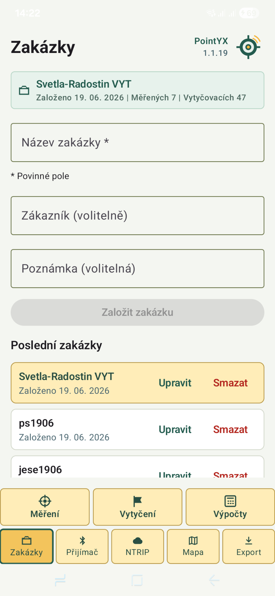

⌖
Měření bodů
Sběr bodů, kódování a ukládání měření v rámci zakázky.
Android GNSS software
PointYX propojuje RTK přijímač, NTRIP korekce, měření bodů, vytyčení, mapu a export dat do jedné přehledné aplikace pro práci v terénu.

Funkce
Sběr bodů, kódování a ukládání měření v rámci zakázky.
Navádění k bodu, tolerance a kontrolní přeměření přímo v terénu.
Připojení externí GNSS antény přes Bluetooth a nastavení výšky.
Nastavení casteru, portu, mountpointu a připojení k RTK korekcím.
Mapové podklady, ortofoto a katastrické vrstvy v jednom rozhraní.
TXT, DXF, GNSS protokol, záloha a obnovení zakázky.
Ukázky aplikace


Proč PointYX
Stav fixu, NTRIP, antény a měření je vidět hned.
Body, vytyčení a exporty drží pohromadě v jednom projektu.
Výstupy pro další zpracování bez zbytečných mezikroků.
Export
PointYX ukládá a exportuje zaměřené body v přehledné podobě pro geodetické, stavební i kontrolní workflow.



PointYX
Aktuálně připravujeme testování v praxi.